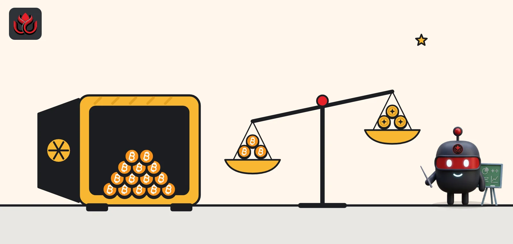
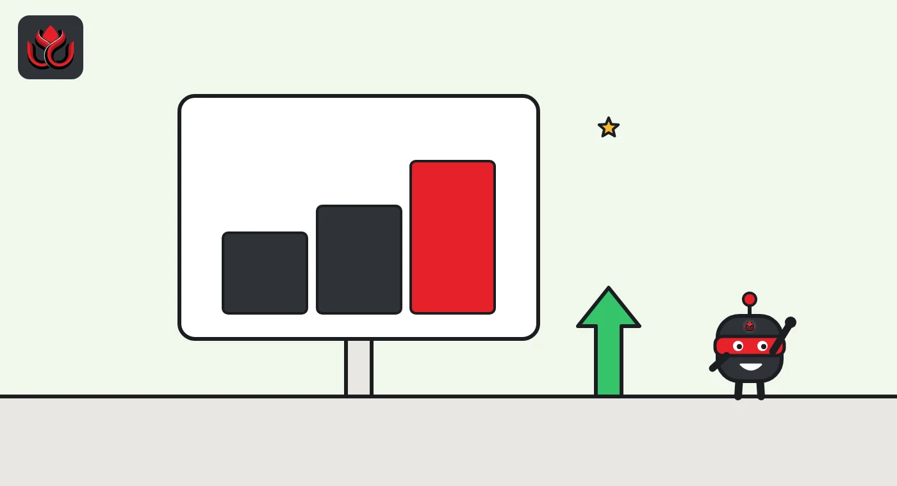
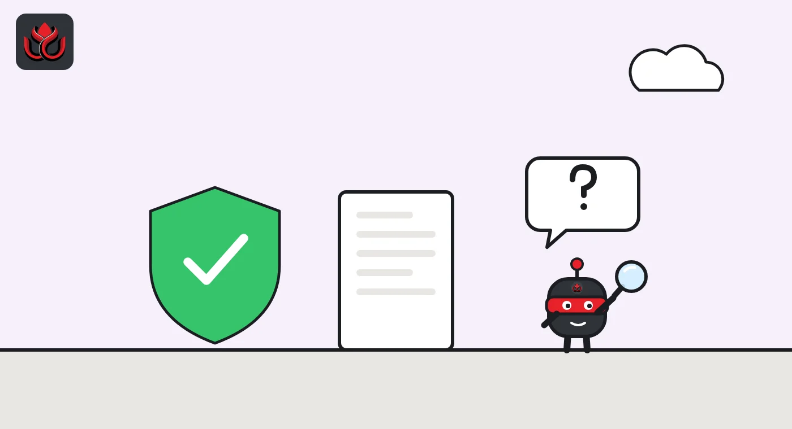

OKX's 48th reserve report shows $29.4 billion, up 27% in three months, with BTC at 110%
OKX marked four years of monthly proof-of-reserves reports on October 30. Its primary assets rose from $23.1 billion in July to $29.4 billion, and every listed coin is backed at least 1:1. Here is what the report proves and what it leaves out.

Key points
- OKX published its 48th consecutive monthly proof-of-reserves report on October 30, 2026, four years after the series began in November 2022.
- OKX shows $29.4 billion in primary assets, up from $23.1 billion in its 45th report in July. Bitcoin is covered at 110%, USDT at 105%, ETH at 100%.
- The report is a snapshot of assets against customer balances. It does not show OKX's other debts, and OKX does not name an auditor.
 What DeepSea's data shows
What DeepSea's data shows
DeepSea labels only some of OKX's wallets, so its totals are far below the reserve report. Its OKX page tracks 117 wallets on 13 chains holding $7.91 billion, and a separate entry labeled Okex holds another $6.21 billion in native coins.
The flows are still useful. In the seven days to November 2, DeepSea shows $1.78 billion entering OKX's tracked wallets and $2.02 billion leaving, a net outflow of $244.07 million. Most of the tracked value sits on Ethereum ($5.56 billion) and Bitcoin ($2.11 billion).
Data: DeepSea (desea.io), checked November 2, 2026, 7:55 a.m. ET.
What OKX published
On October 30, 2026, OKX released its 48th monthly proof-of-reserves report and a post marking four years of the program. Proof of reserves (PoR) is a public check that an exchange holds at least as much crypto in its wallets as its customers have in their accounts.
OKX said the latest report covers more than $36 billion in on-chain assets across 22 cryptocurrencies, and that every asset is at or above 100%. Its proof-of-reserves page gives a narrower headline of $29.4 billion in primary assets, the main coins it reports on separately.
The ratios
A reserve ratio of 110% means OKX's wallets hold 110 coins for every 100 coins customers have on the exchange. These are OKX's own figures from its PoR page:
- BTC: 156,475 BTC in OKX wallets against 142,809 BTC in customer accounts, 110%.
- ETH: 1,866,714 ETH against 1,862,025 ETH, 100%.
- USDT: about 9.21 billion against 8.74 billion, 105%.
- USDC: about 1.88 billion against 1.85 billion, 101%.
- XRP: about 268.8 million against 251.6 million, 107%.
- SOL: about 7.87 million against 7.50 million, 105%.
- DOGE: about 6.18 billion against 6.11 billion, 101%.
- OKB: about 19.73 million against 19.69 million, 100%. OKB is OKX's own token.
ETH at 100% means OKX holds very little ETH beyond what customers own: about 4,700 extra ETH, by our subtraction.
OKX reserve ratios, 48th report
% of customer balances
Source: OKX Proof of Reserves

Three months of growth
In its 45th report, published July 30, 2026, OKX listed $23.12 billion across BTC, ETH, USDT and USDC. At that time it showed BTC at 105%, ETH at 103%, USDT at 112% and USDC at 101%.
The 48th report's $29.4 billion is about 27% higher. Part of any such change comes from coin prices, since reserves are valued in dollars. The other part is real deposits. OKX does not split the two, and its page does not say whether "primary assets" covers exactly the same four coins as in July.
How the check works
OKX's proof-of-reserves page dates its first Merkle tree checks to November 2022 and a zk-STARK upgrade to March 2023. A Merkle tree folds every customer balance into one short code, the root, so each user can confirm their balance was counted. OKX now uses zk-STARK, a type of zero-knowledge proof, which lets it prove facts about all balances without revealing any of them.
The proof is built to show three things: the total equals the sum of all accounts, no account is negative, and every account is included. OKX also publishes its wallet addresses, each with a signed message, so outsiders can check the on-chain side. The tools are open source on GitHub.
Users who want to check for themselves can download their own inclusion data from the PoR reports section, run OKX's zk-STARK validator, and compare published wallet balances with a block-height snapshot using OKX's CheckBalance tool.

What the report does not show
- Only one moment. OKX says the report reflects balances at the time of the snapshot. Transfers after it are not included.
- Not full solvency. The report compares crypto held with crypto owed to users. It does not cover loans, legal claims or other company debts.
- Custodians. OKX's disclaimer says some balances are held at third-party custodians, and users must contact those custodians to verify them.
- Not insurance. The four-year post presents OKX Shield, a separate program for some account takeovers, and calls it voluntary and discretionary, not insurance.
- No named auditor. The four-year post does not name an independent firm.
Regulators are pushing on that last point. Dubai's VARA has tightened its rules for reserve audits this year.
Why it matters this week
The report landed the day after attackers took about $6.3 billion from Binance's hot wallets, a figure Binance gave on October 30 and a theft LC Insight covered here. Reserve data has become the first thing users ask for after a hack.
LC Insight analysis
This section is our reading of the facts above, not a statement of fact.
- We think the 110% bitcoin ratio is the most useful number here: about 13,700 BTC sits above customer balances, a buffer OKX can show on chain.
- ETH at 100% leaves almost no cushion. That is not a problem by itself, but it means any shortfall in ETH would show up quickly in the next report.
- The likely next pressure is on independence. Self-published proofs are checkable, but regulators such as Dubai's VARA increasingly want named auditors and fixed procedures.
What's next
- OKX's 49th report, due around the end of November if the monthly pattern holds.
- Whether OKX names an independent reviewer for its reports.
- How other exchanges' reserve snapshots change after the Binance theft.
Disclaimer. This article is based on public information and the sources listed below as of the update time shown. It is for information only and is not investment, legal or tax advice. Figures may change as companies and authorities publish new data.